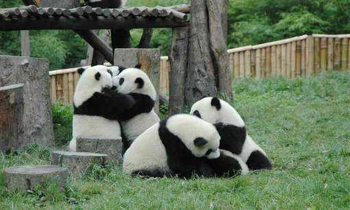
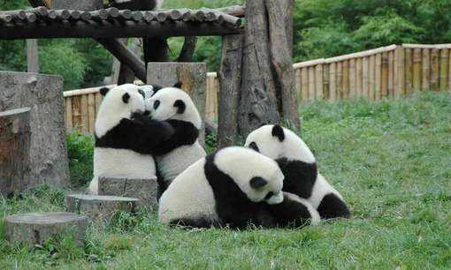

大熊猫（学名：Ailuropoda melanoleuca）：属于食肉目、熊科、大熊猫亚科和大熊猫属唯一的哺乳动物，头躯长1.2-1.8米，
尾长10-12厘米。体重80-120千克，最重可达180千克，体色为黑白两色，它有着圆圆的脸颊，大大的黑眼圈，胖嘟嘟的身体，标志性的内八字的行走方式，
也有解剖刀般锋利的爪子。是世界上最可爱的动物之一。
大熊猫已在地球上生存了至少800万年，被誉为“活化石”和“中国国宝”，世界自然基金会的形象大使，是世界生物多样性保护的旗舰物种。
据第三次全国大熊猫野外种群调查，全世界野生大熊猫不足1600只，属于中国国家一级保护动物。截止2011年10月，全国圈养大熊猫数量为333只。
大熊猫最初是吃肉的，经过进化，99%的食物都是竹子了，
但牙齿和消化道还保持原样，仍然划分为食肉目，发怒时危险性堪比其它熊种。野外大熊猫的寿命为18-20岁，圈养状态下可以超过30岁。
大熊猫的发现在西方世界引起轰动。从那以后，一批又一批的西方探险家、游猎家和博物馆标本采集者来到大熊猫产区，试图揭开大熊猫之迷并猎获这种珍奇的动物。
其中包括美国罗斯福总统的两个儿子西奥多·罗斯福和克米特·罗斯福。两兄弟先是到戴维发现大熊猫的宝兴县，一无所获，然后又进入大凉山。
在越西县他们开枪打死了一头大熊猫，作成了标本带回美国。以后又有德国、英国等国的探险家猎获大熊猫，从中国猎人手中收购的就更多了。
一时间不少西方国家的博物馆里都有了大熊猫的标本。但他们始终没能捕获到一只活的大熊猫。